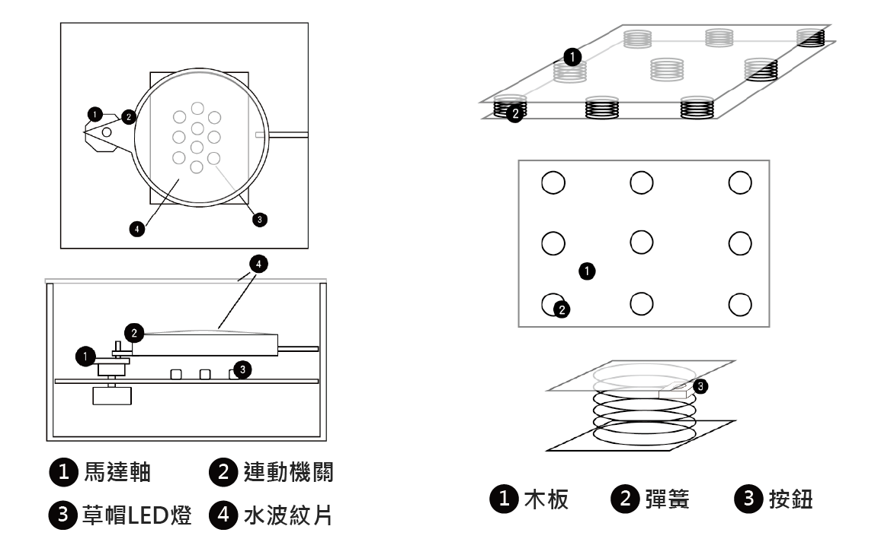
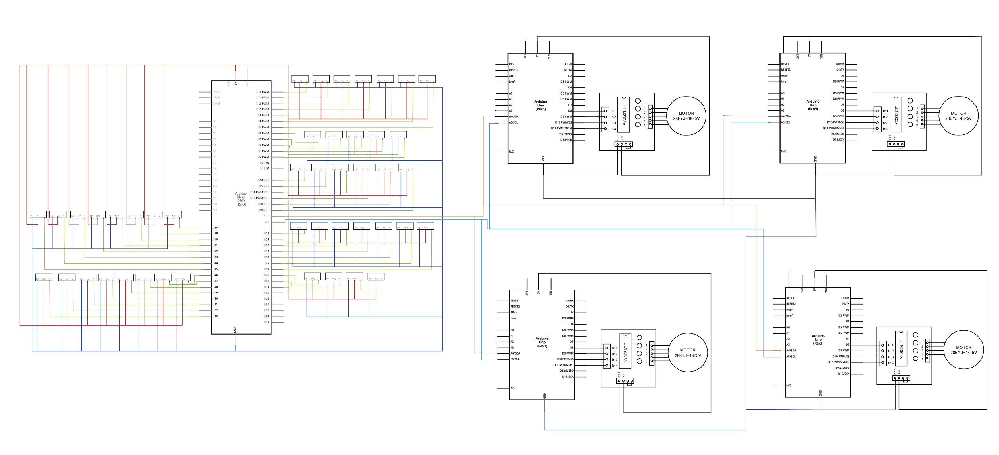

初生
入圍放視大賞
介紹
地球孕育著萬物，子宮是人們生命的起源人類最初的狀態就是在母體中，子宮是生命的誕生地但沒有人知道這個令人神祕的誕生地長怎樣，我們希望透過裝置能讓大家進入這個屬於我們創造的幻境。互動區裝置主要互動方式為體驗者在懶骨頭上移動來改變裝置內光影的變化。
理念
裝置的設計理念是讓體驗者感受回到母親子宮裡溫暖、舒適的感覺，如同回到生命的起源。展場內的懶骨頭，讓體驗者感受到回到母體的舒適與安心，我們利用光影變化結合體驗者在懶骨頭上的移動作為互動方式，體驗身為胎兒在子宮胎動產生周圍環境變化的感覺。我們希望藉由此互動裝置，不只讓人體驗回歸在母親子宮中的模擬情境，也讓他們找回最初的自我。
展示影片
展場照片


機關設計


體驗者下方裝置共有三層，最上層為懶骨頭，中間層為木板，最下層為彈簧及微動開關。利用彈簧與木板結合微動開關來判斷是否有人在上面，微動開關（按鈕）附著於彈簧中間，程式會計算微動開關被觸壓的次數，當體驗者在懶骨頭上面時，彈簧感受到重量會被往下壓，觸發位於彈簧上的微動開關，而與微動開關對應區燈盒裡的燈會亮起、步進馬達開始轉動，馬達上連動著水波紋片，牆上投影出流動效果畫面，光影效果啟動。
機關設計圖、邏輯圖
 懶骨頭下方裝置以微動開關與mega板來偵測體驗者所在區域及計算體驗者在所有區域中共按壓多少次數，互動區上方四個燈光裝置中的馬達分別以一塊uno板控制，燈光裝置中的四盞燈透過同塊uno板控制，另有一塊uno板控制音樂播放，裝置間所有uno板以mega板作為主控台，利用IC2通訊協定的方式來溝通，主控為mega板，由mega板得知哪個按鈕被觸發，在傳送訊息給對應區域的uno板，使該區域的馬達轉動以及燈亮起。